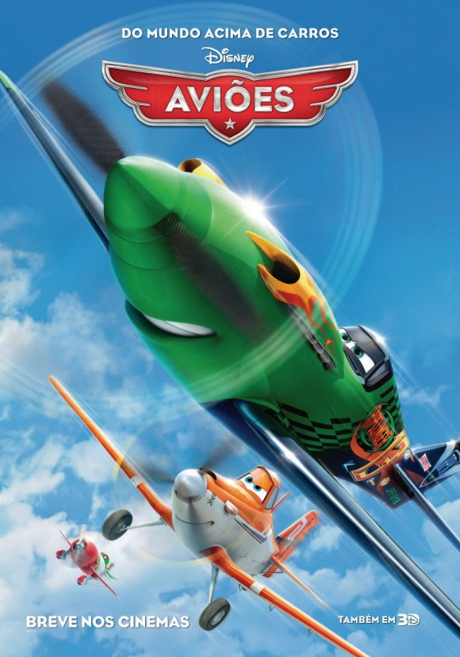

Aviões. |
|
|  | Gênero. Animação |
| Sinopse. Dusty (Dane Cook) é um avião que trabalha pulverizando plantações. Seu grande sonho é participar de corridas internacionais, ao lado de alguns dos mais famosos competidores, mas seu medo de altura e a própria composição da carroceria impedem que esta vontade se torne realidade. Sabendo do sonho do amigo, Chug (Brad Garrett) busca a ajuda de Skipper (Stacy Keach), um reservado avião que, devido a um acidente no passado, não consegue mais voar. Após muita insistência, Skipper aceita ser o mentor de Dusty nesta empreitada. |
|
| Diretor. Klay Hall. | |
| Elenco. Dane Cook (Dusty Crophopper), Stacy Keach (Skipper), Brad Garret (Chug), Carlos Alazraqui (El Chupacabra). |
|
| Dia de Lançamento. 13 de Setembro de 2013. |
|
 
   |
|